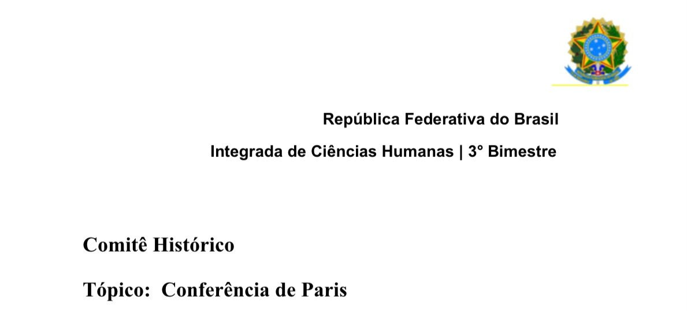

O que estudei
- Conferência de Paris de 1919 e o fim da Primeira Guerra Mundial
- Holocausto: vivências e memórias
- Ditaduras na América Latina
A Conferência de Paris (1919) reuniu os países vencedores da Primeira Guerra Mundial para definir os acordos de paz. O principal deles foi o Tratado de Versalhes, que impôs duras punições à Alemanha. Muitos historiadores apontam essas condições como uma das causas da Segunda Guerra.
O Holocausto foi a perseguição e o extermínio de cerca de seis milhões de judeus e de outros grupos pelo regime nazista. Estudar os relatos de quem viveu esse período é uma forma de manter a memória viva para que não se repita.
As ditaduras na América Latina, entre as décadas de 1960 e 1980 (incluindo a do Brasil, de 1964 a 1985), tiveram censura, perseguição política e violação de direitos, e também deixaram marcas na cultura, na música e na arte da época.
Esses três temas estão ligados. A crise deixada pela Primeira Guerra e pelo Tratado de Versalhes ajudou a criar o ambiente em que o nazismo cresceu na Alemanha, o que levou à Segunda Guerra e ao Holocausto. Depois de 1945, o mundo entrou na Guerra Fria, e esse contexto influenciou os golpes militares na América Latina.
Atividades e trabalhos
- Simulação da Conferência de Paris de 1919 (com devolutiva)
- Proposta de atividade: Vivências e Memórias do Holocausto
- Dossiê Histórico e Cultural das Ditaduras na América Latina
Na simulação, a turma representou as delegações da conferência e negociou os termos da paz, defendendo os interesses de cada país. Já o dossiê reuniu informações históricas e culturais sobre as ditaduras latino-americanas.
A atividade Vivências e Memórias do Holocausto trabalhou com relatos de sobreviventes, mostrando o impacto humano de um acontecimento que muitas vezes aparece só como números nos livros.
No dossiê, além dos fatos políticos, foram reunidas expressões culturais da época, como músicas de protesto, que usavam metáforas para driblar a censura.
Evidências da aprendizagem
O dossiê e as atividades foram entregues na plataforma de tarefas do Senac, e a simulação recebeu devolutiva do professor.

Minha reflexão
Simular uma negociação me fez perceber que decisões políticas envolvem interesses diferentes e consequências de longo prazo. Isso também vale para o mundo dos negócios, que é a área que quero seguir.
Estudar períodos de autoritarismo reforçou para mim o valor da democracia e da liberdade de expressão, que às vezes parecem garantidas, mas foram conquistadas com muita luta.